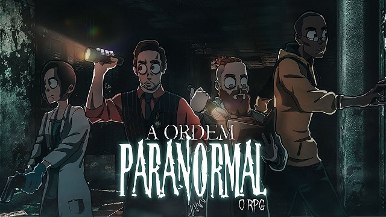

O livro básico de Ordem Paranormal RPG ainda não foi publicado. Porém, o recém-lançado Guia Rápido de Regras introduz as principais (regras, obviamente) mecânicas necessárias para jogar com o sistema do RPG criado por Cellbit em parceria com Felipe Della Corte (desenvolvedor de Tormenta20), Pedrok e Silvia Sala (responsáveis por Skyfall RPG)
Ordem Paranormal é um cenário iniciado em 2022 pelo youtuber Cellbit. Desde então, passou por adaptações pegando emprestadas mecânicas de The Esoterrorists (sistema Gumshoe), Call of Cthulhu (sistema d100) e Dungeons & Dragons (sistema d20).
Uma novidade interessante é que o teste de perícia é feito com 1d20 mais a quantidade de d20 do seu bônus do atributo, adicionando +5 se o personagem for treinado na perícia. Ou seja, um personagem com Força +2 e treinado em Atletismo vai rolar 3d20 + 5 e ficar com o número mais alto no d20 para tentar alcançar a dificuldade estipulada pelo mestre.
 The 7 best Pokémon-likes to play while you wait for Scarlet and VioletEssa noticia foi util?